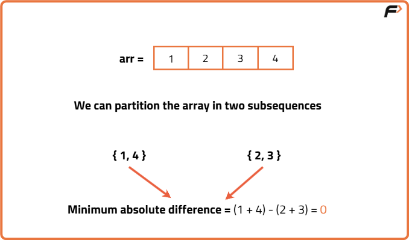
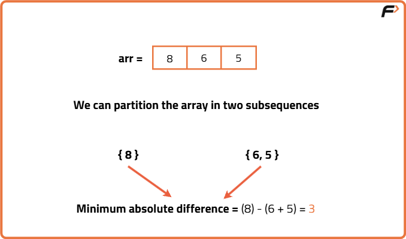

Partition Set Into 2 Subsets With Min Absolute Sum Diff (DP- 16)
Problem Description: Given an array of n integers, partition the array into two subsets such that the absolute difference between their sums is minimized.
Examples
Input: nums = [1, 2, 3, 4] Output: 0 Explanation: Two subsets can be [1,4] and [2,3].
Input: nums = [8, 6, 5] Output: 3 Explanation: Two subsets can be [8] and [6, 5].
Disclaimer: Here is the practice link to help you assess your knowledge better. It's highly recommend trying to solve it before looking at the solution.
Memoization
Algorithm
This question is a slight modification of the problem discussed in Subset-sum equal to target. There we found whether or not a subset exists in an array with a given target sum. We used a dp array to get to our answer. We used to return dp[n-1][k] as our answer. One interesting thing that is happening is that for calculating our answer for dp[n-1][k], we are also solving multiple sub-problems and at the same time storing them as well. We will use this property to solve the question of this article.
In this problem, we want to divide the array into two subsets and return the smallest possible absolute difference between their sums. But instead of tracking both sums separately, we can simplify the process. If we know the total sum of the array and the sum of any one subset, then sum of other subset can be calculated by taking difference of total sum and subset sum. This means we only need to keep track of sum of one subset.
The first subset’s sum can range from 0 to the total sum of the array. The last row of the DP table shows which sums are possible. For each possible sum, we find the other subset’s sum, compute their absolute difference, and take the minimum among them as the result.
In this problem, we want to divide the array into two subsets and return the smallest possible absolute difference between their sums. But instead of tracking both sums separately, we can simplify the process. If we know the total sum of the array and the sum of any one subset, then sum of other subset can be calculated by taking difference of total sum and subset sum. This means we only need to keep track of sum of one subset.
The first subset’s sum can range from 0 to the total sum of the array. The last row of the DP table shows which sums are possible. For each possible sum, we find the other subset’s sum, compute their absolute difference, and take the minimum among them as the result.
- Calculate the total sum of all elements and define the target as any sum between 0 and total sum.
- Use a recursive function with parameters: index, current sum, and a DP table for memoization.
- At each step, choose to include or exclude the current element and explore both possibilities.
- Store results in the DP table to avoid recomputation for the same index and sum.
- After filling the table, iterate over possible sums to find the minimal absolute difference between two subsets.
Code
#include <bits/stdc++.h>
using namespace std;
// Function to solve the subset sum problem with memoization
bool subsetSumUtil(int ind, int target, vector<int>& arr, vector<vector<int>>& dp) {
// Base case: If the target sum is 0, return true
if (target == 0)
return dp[ind][target] = true;
// Base case: If we have considered all elements and the target is still not 0, return false
if (ind == 0)
return dp[ind][target] = (arr[0] == target);
// If the result for this state is already calculated, return it
if (dp[ind][target] != -1)
return dp[ind][target];
// Recursive cases
// 1. Exclude the current element
bool notTaken = subsetSumUtil(ind - 1, target, arr, dp);
// 2. Include the current element if it doesn't exceed the target
bool taken = false;
if (arr[ind] <= target)
taken = subsetSumUtil(ind - 1, target - arr[ind], arr, dp);
// Store the result in the DP table and return
return dp[ind][target] = notTaken || taken;
}
// Function to find the minimum absolute difference between two subset sums
int minSubsetSumDifference(vector<int>& arr, int n) {
int totSum = 0;
// Calculate the total sum of the array
for (int i = 0; i < n; i++) {
totSum += arr[i];
}
// Initialize a DP table to store the results of the subset sum problem
vector<vector<int>> dp(n, vector<int>(totSum + 1, -1));
// Calculate the subset sum for each possible sum from 0 to the total sum
for (int i = 0; i <= totSum; i++) {
bool dummy = subsetSumUtil(n - 1, i, arr, dp);
}
int mini = 1e9;
for (int i = 0; i <= totSum; i++) {
if (dp[n - 1][i] == true) {
int diff = abs(i - (totSum - i));
mini = min(mini, diff);
}
}
return mini;
}
int main() {
vector<int> arr = {1, 2, 3, 4};
int n = arr.size();
cout << "The minimum absolute difference is: " << minSubsetSumDifference(arr, n);
return 0;
}Complexity Analysis
Time Complexity: O(N*K), there are total N*K states, where N is the length of array and K is the total sum of the array.Space Complexity: O(N*K) + O(N), we use a memo table to avoid recomputation. Extra auxiliary stack space is used for recursion.
Tabulation
Algorithm
In order to avoid extra recursive stack space used in memoization approach, we can simply convert our solution into tabulation approach. We can follow these steps in order to form our tabulation solution:
- Create a 2D table with dimensions based on input size and total sum, initialized to false.
- Initialize the first column of the table as true, since a sum of zero is always achievable.
- Initialize the first row to reflect if the first element equals the target sums.
- Use nested loops to fill the table row-wise, using previously computed values to decide if current sum can be formed.
- At each cell, set it true if sum can be made either by excluding or including the current element.
- Finally, check the last row to find valid subset sums and determine the minimum absolute difference.
Code
#include <bits/stdc++.h>
using namespace std;
class Solution {
public:
// Function to find the minimum absolute difference between two subset sums
int minSubsetSumDifference(vector<int>& arr, int n) {
int totSum = 0;
// Calculate the total sum of the array
for (int i = 0; i < n; i++) {
totSum += arr[i];
}
// Initialize a DP table to store the results of the subset sum problem
vector<vector<bool>> dp(n, vector<bool>(totSum + 1, false));
// Base case: If no elements are selected (sum is 0), it's a valid subset
for (int i = 0; i < n; i++) {
dp[i][0] = true;
}
// Initialize the first row based on the first element of the array
if (arr[0] <= totSum)
dp[0][arr[0]] = true;
// Fill in the DP table using a bottom-up approach
for (int ind = 1; ind < n; ind++) {
for (int target = 1; target <= totSum; target++) {
// Exclude the current element
bool notTaken = dp[ind - 1][target];
// Include the current element if it doesn't exceed the target
bool taken = false;
if (arr[ind] <= target)
taken = dp[ind - 1][target - arr[ind]];
dp[ind][target] = notTaken || taken;
}
}
int mini = 1e9;
for (int i = 0; i <= totSum; i++) {
if (dp[n - 1][i] == true) {
// Calculate the absolute difference between two subset sums
int diff = abs(i - (totSum - i));
mini = min(mini, diff);
}
}
return mini;
}
};
int main() {
vector<int> arr = {1, 2, 3, 4};
int n = arr.size();
Solution sol;
cout << "The minimum absolute difference is: " << sol.minSubsetSumDifference(arr, n);
return 0;
}
Complexity Analysis
Time Complexity: O(N*K), there are total N*K states, where N is the length of array and K is the total sum of the array.Space Complexity: O(N*K) , we use a 2D DP array to avoid recomputation.
Space Optimization
Algorithm
If we closely look the relation,
dp[ind][target] = dp[ind-1][target] || dp[ind-1][target-arr[ind]]
We see that to calculate a value of a cell of the dp array, we need only the previous row values
This means we do not need to store the entire 2D table, and instead can maintain just two 1D arrays, one representing the previous row and one for the current row. We initialize the first element of both arrays to true, as a sum of zero is always possible. For each new element in the array, we create and fill the current row based on the previous row’s values, then replace the previous row with the current one.
This means we do not need to store the entire 2D table, and instead can maintain just two 1D arrays, one representing the previous row and one for the current row. We initialize the first element of both arrays to true, as a sum of zero is always possible. For each new element in the array, we create and fill the current row based on the previous row’s values, then replace the previous row with the current one.
Code
#include <bits/stdc++.h>
using namespace std;
class Solution {
public:
// Function to find the minimum absolute difference between two subset sums
int minSubsetSumDifference(vector<int>& arr, int n) {
int totSum = 0;
// Calculate the total sum of the array
for (int i = 0; i < n; i++) {
totSum += arr[i];
}
// Initialize a boolean vector 'prev' to represent the previous row of the DP table
vector<bool> prev(totSum + 1, false);
// Base case: If no elements are selected (sum is 0), it's a valid subset
prev[0] = true;
// Initialize the first row based on the first element of the array
if (arr[0] <= totSum)
prev[arr[0]] = true;
// Fill in the DP table using a bottom-up approach
for (int ind = 1; ind < n; ind++) {
// Create a boolean vector 'cur' to represent the current row of the DP table
vector<bool> cur(totSum + 1, false);
cur[0] = true;
for (int target = 1; target <= totSum; target++) {
// Exclude the current element
bool notTaken = prev[target];
// Include the current element if it doesn't exceed the target
bool taken = false;
if (arr[ind] <= target)
taken = prev[target - arr[ind]];
// Mark current target as achievable if either excluding or including current element works
cur[target] = notTaken || taken;
}
// Set 'cur' as the 'prev' for the next iteration
prev = cur;
}
int mini = INT_MAX;
for (int i = 0; i <= totSum; i++) {
if (prev[i]) {
// Calculate the absolute difference between two subset sums
int diff = abs(i - (totSum - i));
mini = min(mini, diff);
}
}
return mini;
}
};
int main() {
vector<int> arr = {1, 2, 3, 4};
int n = arr.size();
Solution sol;
cout << "The minimum absolute difference is: " << sol.minSubsetSumDifference(arr, n) << "\n";
return 0;
}
Complexity Analysis
Time Complexity: O(N*K), there are total N*K states, where N is the length of array and K is the total sum of the array.Space Complexity: O(N), we use two 1D arrays to store value of previous row and current row.